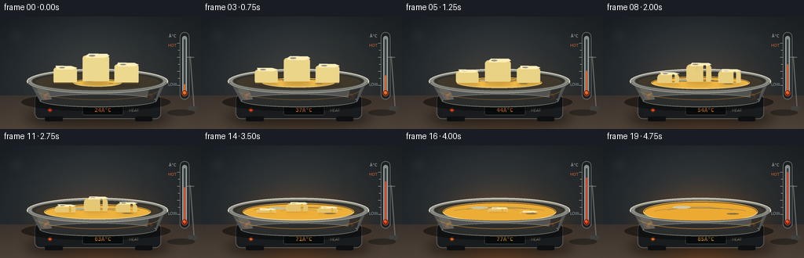
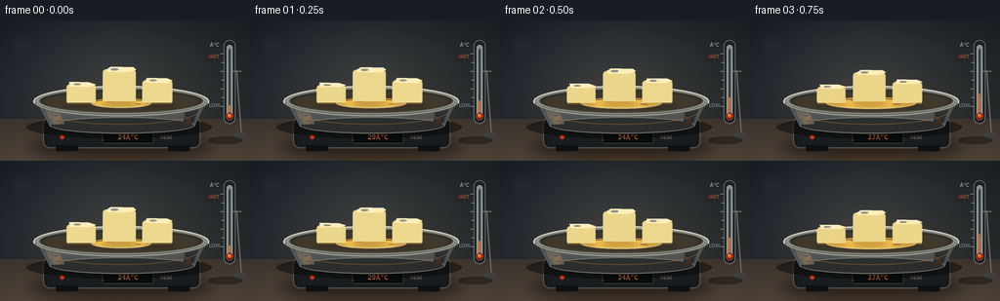
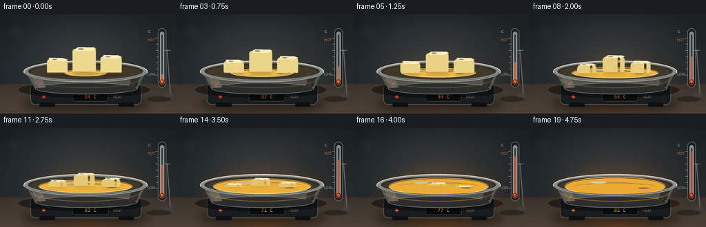
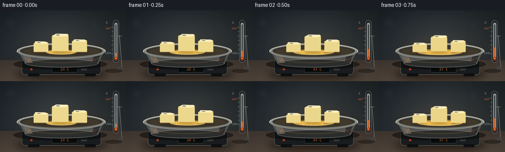

CODING AGENTS AS PIXEL WORLD MODELS
traex/GPT-5.6-Sol · phygen_100
点击播放 · 原生 RGB 像素
逐轮保存的候选
回放视频、检查图与代码变化。
每份候选均可单独播放。实际图片检查记录在下方工具轨迹中。
候选 01播放与检查图
点击播放 · 原生 RGB 像素


展开代码变化
--- 上一保存版本
+++ 本次保存版本
@@ -0,0 +1,290 @@
+from pathlib import Path
+import math
+import subprocess
+import numpy as np
+from PIL import Image, ImageDraw, ImageFont, ImageFilter
+import artifact_io
+
+CASE_DIR = Path(__file__).resolve().parent
+W, H, N, FPS = 256, 144, 20, 4.0
+S = 4
+WW, HH = W*S, H*S
+
+
+def sc(v):
+ if isinstance(v, (tuple, list)):
+ return tuple(int(round(x*S)) for x in v)
+ return int(round(v*S))
+
+try:
+ FONT = ImageFont.truetype('/usr/share/fonts/truetype/dejavu/DejaVuSans.ttf', sc(7))
+ FONT_B = ImageFont.truetype('/usr/share/fonts/truetype/dejavu/DejaVuSans-Bold.ttf', sc(7))
+ FONT_SMALL = ImageFont.truetype('/usr/share/fonts/truetype/dejavu/DejaVuSans.ttf', sc(5))
+ FONT_DIGIT = ImageFont.truetype('/usr/share/fonts/truetype/dejavu/DejaVuSansMono-Bold.ttf', sc(7))
+except OSError:
+ FONT = FONT_B = FONT_SMALL = FONT_DIGIT = ImageFont.load_default()
+
+
+def rgba_layer():
+ return Image.new('RGBA', (WW, HH), (0, 0, 0, 0))
+
+
+def add_blurred(base, painter, radius):
+ lay = rgba_layer()
+ painter(ImageDraw.Draw(lay))
+ lay = lay.filter(ImageFilter.GaussianBlur(sc(radius)))
+ return Image.alpha_composite(base, lay)
+
+
+def background():
+ # Moody workshop wall and stone worktop, with fixed photographic grain.
+ yy, xx = np.mgrid[0:HH, 0:WW]
+ wall = np.zeros((HH, WW, 4), dtype=np.float32)
+ wall[..., 0] = 24 + 12*(yy/HH) + 5*(xx/WW)
+ wall[..., 1] = 31 + 11*(yy/HH) + 3*(xx/WW)
+ wall[..., 2] = 37 + 9*(yy/HH)
+ wall[..., 3] = 255
+ # soft center illumination
+ light = np.exp(-(((xx-WW*.46)/(WW*.52))**2 + ((yy-HH*.42)/(HH*.60))**2)*2.2)
+ wall[..., :3] += light[..., None] * np.array([23, 22, 20])[None,None,:]
+ # counter surface begins low in frame
+ edge = int(101*S)
+ cy = np.clip((yy-edge)/(43*S), 0, 1)
+ counter = np.stack([61+22*cy, 53+18*cy, 47+13*cy], axis=-1)
+ wall[edge:, :, :3] = counter[edge:]
+ rng = np.random.default_rng(100)
+ grain = rng.normal(0, 1.7, (HH,WW,1))
+ wall[..., :3] += grain
+ wall = np.uint8(np.clip(wall, 0, 255))
+ im = Image.fromarray(wall, 'RGBA')
+
+ # Defocused background highlights and wall seams.
+ bokeh = rgba_layer(); d = ImageDraw.Draw(bokeh)
+ d.line(sc((0,100,256,100)), fill=(195,170,137,35), width=sc(.6))
+ d.line(sc((181,0,181,100)), fill=(8,12,16,45), width=sc(1))
+ for x,y,r,c in [(21,25,12,(121,157,170,18)),(68,17,6,(247,200,118,15)),
+ (194,29,10,(93,142,157,15)),(234,72,7,(234,155,65,12)),
+ (10,87,5,(190,208,206,12))]:
+ d.ellipse(sc((x-r,y-r,x+r,y+r)), fill=c)
+ return Image.alpha_composite(im, bokeh.filter(ImageFilter.GaussianBlur(sc(6))))
+
+BASE = background()
+
+
+def wax_chunk(base, cx, bottom, width, height0, depth, p, tilt=0, seed=0):
+ # Chunk settles, rounds and shrinks as it dissolves into the pool.
+ survival = max(0.0, 1.0 - p/0.91)
+ if survival <= 0:
+ return base
+ # Vertical height disappears quickly late in the melt; width stays broader while slumping.
+ hh = height0 * (0.10 + 0.90*survival**0.72)
+ ww = width * (0.54 + 0.46*survival**0.28)
+ dep = depth * (0.42 + 0.58*survival)
+ by = bottom + p*2.0
+ top = by - hh
+ skew = tilt * (0.25 + .75*survival)
+ rr = min(3.5 + p*5.0, ww*.22)
+
+ shadow = rgba_layer(); sd = ImageDraw.Draw(shadow)
+ sd.ellipse(sc((cx-ww*.54, by-dep*.1, cx+ww*.58, by+dep*.38)), fill=(36,21,7,int(75*survival)))
+ shadow = shadow.filter(ImageFilter.GaussianBlur(sc(2.2)))
+ base = Image.alpha_composite(base, shadow)
+
+ lay = rgba_layer(); d = ImageDraw.Draw(lay)
+ # Front face with a waxy golden lower edge.
+ body_box = sc((cx-ww/2, top+dep*.28, cx+ww/2, by))
+ face = (226+int(10*survival), 190+int(27*survival), 104+int(38*survival), 255)
+ d.rounded_rectangle(body_box, radius=sc(rr), fill=face,
+ outline=(250,227,159,170), width=sc(.55))
+ # softened top plane, giving each piece volume
+ top_poly = [(cx-ww/2+rr,top+dep*.35), (cx-ww*.30+skew,top),
+ (cx+ww*.36+skew,top+.45), (cx+ww/2,top+dep*.33),
+ (cx+ww*.30,top+dep*.62), (cx-ww*.34,top+dep*.58)]
+ d.polygon([sc(q) for q in top_poly], fill=(255,238,183,255))
+ d.line([sc(q) for q in top_poly[:4]], fill=(255,250,219,225), width=sc(.65), joint='curve')
+ # translucent side shading and warm contact band
+ d.rounded_rectangle(sc((cx-ww/2+1, by-max(1.5,dep*.17), cx+ww/2-1, by)),
+ radius=sc(1.4), fill=(197,135,45,65))
+ # subdued highlight patch
+ d.ellipse(sc((cx-ww*.26, top+dep*.18, cx-ww*.02, top+dep*.42)), fill=(255,255,230,115))
+ if p > .35:
+ # molten rivulet crawling down the front
+ a = int(150*min(1,(p-.35)/.3)*survival)
+ d.rounded_rectangle(sc((cx+ww*.18, top+dep*.5, cx+ww*.25+1, by-1)), radius=sc(1),
+ fill=(241,181,57,a))
+ return Image.alpha_composite(base, lay)
+
+
+def render(i):
+ t = i/(N-1)
+ # Smooth monotonic melting progress. The final frames show fully liquid wax.
+ p = min(1.0, (t/0.93)**1.12)
+ temp = round(24 + 61*(0.12*t + 0.88*(t**0.80)))
+ im = BASE.copy()
+
+ # Warm radiant light grows strongly with temperature.
+ glow_strength = int(18 + 70*p)
+ def glowpaint(d):
+ d.ellipse(sc((37,55,216,145)), fill=(255,121,24,glow_strength))
+ im = add_blurred(im, glowpaint, 23)
+
+ # Cast shadow beneath appliance.
+ sh = rgba_layer(); d = ImageDraw.Draw(sh)
+ d.ellipse(sc((31,119,218,141)), fill=(4,5,6,150))
+ sh = sh.filter(ImageFilter.GaussianBlur(sc(7)))
+ im = Image.alpha_composite(im, sh)
+
+ # Compact hot plate body.
+ plate = rgba_layer(); d = ImageDraw.Draw(plate)
+ d.rounded_rectangle(sc((44,99,205,131)), radius=sc(7), fill=(25,28,30,255), outline=(93,91,84,255), width=sc(1))
+ d.polygon([sc(q) for q in [(50,99),(199,99),(188,112),(59,112)]], fill=(47,47,44,255))
+ d.line(sc((57,106,190,106)), fill=(126,78+int(25*p),39,180), width=sc(1))
+ # feet
+ d.rounded_rectangle(sc((57,128,80,134)), radius=sc(2), fill=(14,15,16,255))
+ d.rounded_rectangle(sc((172,128,194,134)), radius=sc(2), fill=(14,15,16,255))
+ # power LED
+ led = (255,55+int(65*p),21,255)
+ d.ellipse(sc((61,117,66,122)), fill=(70,16,8,255), outline=(164,77,43,255), width=sc(.5))
+ d.ellipse(sc((62,118,65,121)), fill=led)
+ # inset temperature panel
+ d.rounded_rectangle(sc((105,114,157,126)), radius=sc(2), fill=(8,12,12,255), outline=(78,84,78,255), width=sc(.6))
+ panel_text = f'{temp:02d}°C'
+ bbox = d.textbbox((0,0), panel_text, font=FONT_DIGIT)
+ d.text((sc(131)-((bbox[2]-bbox[0])//2),sc(115.4)), panel_text, font=FONT_DIGIT,
+ fill=(255,120+int(55*p),50,255))
+ d.text(sc((164,117)), 'HEAT', font=FONT_SMALL, fill=(151,143,126,210))
+ im = Image.alpha_composite(im, plate)
+
+ # Heating ring glimpsed under the dish.
+ ring = rgba_layer(); d = ImageDraw.Draw(ring)
+ d.ellipse(sc((54,89,196,116)), outline=(97,49,26,255), width=sc(5))
+ d.arc(sc((57,91,193,113)), 180, 360, fill=(255,74+int(85*p),20,int(80+170*p)), width=sc(2.6))
+ ring = ring.filter(ImageFilter.GaussianBlur(sc(.45 + .9*p)))
+ im = Image.alpha_composite(im, ring)
+
+ # Pan shadow and metal body behind its contents.
+ pan = rgba_layer(); d = ImageDraw.Draw(pan)
+ d.ellipse(sc((27,98,217,121)), fill=(4,5,5,125))
+ d.polygon([sc(q) for q in [(35,79),(213,79),(199,109),(51,109)]], fill=(80,83,82,255))
+ d.ellipse(sc((51,99,199,116)), fill=(43,45,45,255), outline=(116,116,109,255), width=sc(1))
+ # vertical metallic reflections
+ d.polygon([sc(q) for q in [(43,83),(56,84),(66,106),(53,107)]], fill=(151,151,140,130))
+ d.polygon([sc(q) for q in [(192,82),(207,80),(198,105),(187,107)]], fill=(43,46,47,175))
+ # upper rim and interior
+ d.ellipse(sc((34,67,214,99)), fill=(142,143,136,255), outline=(221,216,194,255), width=sc(1.2))
+ d.ellipse(sc((40,70,208,95)), fill=(48,48,43,255), outline=(87,88,83,255), width=sc(1))
+ d.ellipse(sc((45,73,203,94)), fill=(63,56,43,255))
+ im = Image.alpha_composite(im, pan)
+
+ # Molten wax pool expands, deepens in color, and becomes glassy.
+ pool = rgba_layer(); d = ImageDraw.Draw(pool)
+ rx = 31 + 44*(1-math.exp(-3.1*p))
+ ry = 5.0 + 6.5*p + 2.2*p*p
+ cx, cy = 124, 84.8
+ liquid = (236+int(8*(1-p)), 192-int(22*p), 79-int(29*p), 255)
+ d.ellipse(sc((cx-rx,cy-ry,cx+rx,cy+ry)), fill=liquid,
+ outline=(255,221-int(25*p),113-int(20*p),230), width=sc(.8))
+ # darker translucent perimeter and meniscus
+ d.arc(sc((cx-rx+.5,cy-ry+.5,cx+rx-.5,cy+ry-.5)), 0, 180,
+ fill=(255,238,165,210), width=sc(.8))
+ d.arc(sc((cx-rx+.8,cy-ry+.8,cx+rx-.8,cy+ry-.8)), 180, 360,
+ fill=(152,91,24,155), width=sc(1.1))
+ # Surface ripples become visible as the wax liquefies.
+ if p > .20:
+ a = int(130*min(1,(p-.2)/.45))
+ phase = i*.58
+ for k, scale in enumerate((.34,.60,.83)):
+ off = math.sin(phase+k*1.7)*1.1
+ box = (cx-rx*scale, cy-ry*.42+off, cx+rx*scale, cy+ry*.34+off)
+ d.arc(sc(box), 195, 342, fill=(255,238,168,max(25,a-22*k)), width=sc(.55))
+ # Moving specular streaks: subtle, but clearly glossy liquid.
+ hx = cx-rx*.50 + math.sin(i*.35)*2
+ d.ellipse(sc((hx,cy-ry*.55,hx+rx*.32,cy-ry*.30)), fill=(255,250,211,120+int(70*p)))
+ d.ellipse(sc((cx+rx*.46,cy+ry*.12,cx+rx*.67,cy+ry*.25)), fill=(255,225,129,80))
+ im = Image.alpha_composite(im, pool)
+
+ # Three irregular blocks melt at slightly different rates.
+ p1 = min(1, p*1.02)
+ p2 = min(1, max(0,p-.025)*1.00)
+ p3 = min(1, max(0,p-.07)*1.08)
+ im = wax_chunk(im, 83, 86, 30, 23, 8, p1, tilt=-3, seed=1)
+ im = wax_chunk(im, 122, 84.5, 34, 37, 9, p2, tilt=2, seed=2)
+ im = wax_chunk(im, 161, 86, 31, 27, 8, p3, tilt=-1, seed=3)
+
+ # Front lip restores correct occlusion and polished metal glints.
+ lip = rgba_layer(); d = ImageDraw.Draw(lip)
+ d.arc(sc((34,67,214,99)), 2, 178, fill=(235,225,194,215), width=sc(1.05))
+ d.arc(sc((34,67,214,99)), 9, 171, fill=(97,99,95,255), width=sc(3.1))
+ d.arc(sc((36,69,212,98)), 8, 172, fill=(190,187,169,245), width=sc(.8))
+ # small reflected amber band along pan wall
+ d.arc(sc((43,77,205,107)), 12, 168, fill=(226,141,35,int(55+70*p)), width=sc(1.2))
+ im = Image.alpha_composite(im, lip)
+
+ # Freestanding glass thermometer, on the right side of the frame.
+ therm = rgba_layer(); d = ImageDraw.Draw(therm)
+ # mount shadow, stand, clip
+ d.ellipse(sc((213,119,248,127)), fill=(3,4,5,90))
+ d.rounded_rectangle(sc((229,20,241,106)), radius=sc(6), fill=(30,34,36,245), outline=(130,135,133,230), width=sc(.75))
+ d.rounded_rectangle(sc((232,25,238,99)), radius=sc(3), fill=(207,223,219,150), outline=(238,245,238,180), width=sc(.55))
+ # inner capillary
+ d.rounded_rectangle(sc((234.0,29,236.0,98)), radius=sc(1), fill=(56,64,65,220))
+ level_y = 91 - 57*(0.08 + .92*(t**.84))
+ mercury_col = (246,57+int(49*(1-p)),24,255)
+ d.rounded_rectangle(sc((234.2,level_y,235.8,99)), radius=sc(.8), fill=mercury_col)
+ d.ellipse(sc((231.5,94,238.5,102)), fill=(97,32,20,255), outline=(232,104,55,255), width=sc(.6))
+ d.ellipse(sc((233,95.5,237,99.7)), fill=mercury_col)
+ d.ellipse(sc((233.3,95.7,234.8,97.3)), fill=(255,191,143,210))
+ # scale marks, warm upper zone
+ for j in range(7):
+ y = 88-j*9
+ length = 3.4 if j%2==0 else 2.2
+ d.line(sc((228.8-length,y,228.8,y)), fill=(211,215,206,220), width=sc(.55))
+ d.text(sc((215,22)), '°C', font=FONT_SMALL, fill=(214,215,207,220))
+ d.text(sc((214,34)), 'HOT', font=FONT_SMALL, fill=(237,111,62,210))
+ d.text(sc((214,84)), 'LOW', font=FONT_SMALL, fill=(157,193,203,185))
+ # stand post behind case impression
+ d.line(sc((242,51,247,117)), fill=(101,102,99,255), width=sc(1.4))
+ d.line(sc((238,52,247,52)), fill=(122,123,117,255), width=sc(1.1))
+ d.rounded_rectangle(sc((239,115,251,120)), radius=sc(2), fill=(67,68,66,255))
+ im = Image.alpha_composite(im, therm)
+
+ # Delicate heat shimmer, only after heating; no smoke (wax is melting, not burning).
+ if p > .28:
+ heat = rgba_layer(); d = ImageDraw.Draw(heat)
+ alpha = int(18 + 34*p)
+ for k, x0 in enumerate((91,121,151,179)):
+ pts=[]
+ for q in range(18):
+ yy0 = 69-q*2.2
+ xx0 = x0 + math.sin(q*.66 + i*.38 + k)* (1.0+1.1*p)
+ pts.append(sc((xx0,yy0)))
+ d.line(pts, fill=(255,226,169,alpha), width=sc(.65))
+ heat = heat.filter(ImageFilter.GaussianBlur(sc(1.0)))
+ im = Image.alpha_composite(im, heat)
+
+ # restrained vignette makes the wax the focal point
+ arr = np.asarray(im.convert('RGB')).astype(np.float32)
+ yy,xx = np.mgrid[0:HH,0:WW]
+ r2 = ((xx-WW*.49)/(WW*.73))**2 + ((yy-HH*.54)/(HH*.90))**2
+ vig = np.clip(1 - .20*np.maximum(0,r2-.28), .72, 1)
+ arr *= vig[...,None]
+ out = Image.fromarray(np.uint8(np.clip(arr,0,255))).resize((W,H), Image.Resampling.LANCZOS)
+ return np.asarray(out, dtype=np.uint8)
+
+
+def main():
+ frames = np.stack([render(i) for i in range(N)], axis=0)
+ artifact_io.save(frames, CASE_DIR)
+ # A conventional video is useful for quick local review; required artifacts are produced above.
+ try:
+ subprocess.run([
+ 'ffmpeg','-y','-loglevel','error','-framerate',str(FPS),
+ '-i',str(CASE_DIR/'frames'/'%02d.png'),'-c:v','libx264','-pix_fmt','yuv420p',
+ '-movflags','+faststart',str(CASE_DIR/'output.mp4')
+ ], check=True)
+ except (FileNotFoundError, subprocess.CalledProcessError):
+ pass
+ print(f'Saved {frames.shape[0]} RGB frames at {frames.shape[2]}x{frames.shape[1]}')
+
+if __name__ == '__main__':
+ main()
候选 02播放与检查图
点击播放 · 原生 RGB 像素


展开代码变化
--- 上一保存版本
+++ 本次保存版本
@@ -148,7 +148,7 @@
d.ellipse(sc((62,118,65,121)), fill=led)
# inset temperature panel
d.rounded_rectangle(sc((105,114,157,126)), radius=sc(2), fill=(8,12,12,255), outline=(78,84,78,255), width=sc(.6))
- panel_text = f'{temp:02d}°C'
+ panel_text = f'{temp:02d} C'
bbox = d.textbbox((0,0), panel_text, font=FONT_DIGIT)
d.text((sc(131)-((bbox[2]-bbox[0])//2),sc(115.4)), panel_text, font=FONT_DIGIT,
fill=(255,120+int(55*p),50,255))
@@ -239,7 +239,7 @@
y = 88-j*9
length = 3.4 if j%2==0 else 2.2
d.line(sc((228.8-length,y,228.8,y)), fill=(211,215,206,220), width=sc(.55))
- d.text(sc((215,22)), '°C', font=FONT_SMALL, fill=(214,215,207,220))
+ d.text(sc((215,22)), 'C', font=FONT_SMALL, fill=(214,215,207,220))
d.text(sc((214,34)), 'HOT', font=FONT_SMALL, fill=(237,111,62,210))
d.text(sc((214,84)), 'LOW', font=FONT_SMALL, fill=(157,193,203,185))
# stand post behind case impression
@@ -283,7 +283,17 @@
'-movflags','+faststart',str(CASE_DIR/'output.mp4')
], check=True)
except (FileNotFoundError, subprocess.CalledProcessError):
- pass
+ # OpenCV provides a fallback in minimal environments without the ffmpeg CLI.
+ try:
+ import cv2
+ writer = cv2.VideoWriter(str(CASE_DIR/'output.mp4'),
+ cv2.VideoWriter_fourcc(*'mp4v'), FPS, (W, H))
+ if writer.isOpened():
+ for frame in frames:
+ writer.write(cv2.cvtColor(frame, cv2.COLOR_RGB2BGR))
+ writer.release()
+ except Exception:
+ pass
print(f'Saved {frames.shape[0]} RGB frames at {frames.shape[2]}x{frames.shape[1]}')
if __name__ == '__main__':
可观测工具轨迹
实际执行的命令与返回图片。
命令 1exit 0
/bin/bash -lc "cat prompt.txt && printf '\\n--- GENERATION_RULES.md ---\\n' && cat GENERATION_RULES.md"
命令 2exit 0
/bin/bash -lc "cat task_spec.json && printf '\\n--- FILES ---\\n' && find . -maxdepth 2 -type f -printf '%p\\n' | sort"
命令 3exit 0
/bin/bash -lc "command -v ffmpeg; command -v python3; python3 - <<'PY' mods=['PIL','numpy','cv2','imageio','moviepy','cairo'] for m in mods: try: x=__import__(m); print(m,'OK',getattr(x,'__version__','')) except Exception as e: print(m,'NO',str(e)[:80]) PY"
命令 4exit 0
/bin/bash -lc 'cat artifact_io.py'
命令 5exit 2
/bin/bash -lc "cat > generate.py <<'PY'
from pathlib import Path
import math
import subprocess
import numpy as np
from PIL import Image, ImageDraw, ImageFont, ImageFilter
import artifact_io
CASE_DIR = Path(__file__).resolve().parent
W, H, N, FPS = 256, 144, 20, 4.0
S = 4
WW, HH = W*S, H*S
def sc(v):
if isinstance(v, (tuple, list)):
return tuple(int(round(x*S)) for x in v)
return int(round(v*S))
try:
FONT = ImageFont.truetype('/usr/share/fonts/truetype/dejavu/DejaVuSans.ttf', sc(7))
FONT_B = ImageFont.truetype('/usr/share/fonts/truetype/dejavu/DejaVuSans-Bold.ttf', sc(7))
FONT_SMALL = ImageFont.truetype('/usr/share/fonts/truetype/dejavu/DejaVuSans.ttf', sc(5))
FONT_DIGIT = ImageFont.truetype('/usr/share/fonts/truetype/dejavu/DejaVuSansMono-Bold.ttf', sc(7))
except OSError:
FONT = FONT_B = FONT_SMALL = FONT_DIGIT = ImageFont.load_default()
def rgba_layer():
return Image.new('RGBA', (WW, HH), (0, 0, 0, 0))
def add_blurred(base, painter, radius):
lay = rgba_layer()
painter(ImageDraw.Draw(lay))
lay = lay.filter(ImageFilter.GaussianBlur(sc(radius)))
return Image.alpha_composite(base, lay)
def background():
# Moody workshop wall and stone worktop, with fixed photographic grain.
yy, xx = np.mgrid[0:HH, 0:WW]
wall = np.zeros((HH, WW, 4), dtype=np.float32)
wall[..., 0] = 24 + 12*(yy/HH) + 5*(xx/WW)
wall[..., 1] = 31 + 11*(yy/HH) + 3*(xx/WW)
wall[..., 2] = 37 + 9*(yy/HH)
wall[..., 3] = 255
# soft center illumination
light = np.exp(-(((xx-WW*.46)/(WW*.52))**2 + ((yy-HH*.42)/(HH*.60))**2)*2.2)
wall[..., :3] += light[..., None] * np.array([23, 22, 20])[None,None,:]
# counter surface begins low in frame
edge = int(101*S)
cy = np.clip((yy-edge)/(43*S), 0, 1)
counter = np.stack([61+22*cy, 53+18*cy, 47+13*cy], axis=-1)
wall[edge:, :, :3] = counter[edge:]
rng = np.random.default_rng(100)
grain = rng.normal(0, 1.7, (HH,WW,1))
wall[..., :3] += grain
wall = np.uint8(np.clip(wall, 0, 255))
im = Image.fromarray(wall, 'RGBA')
# Defocused background highlights and wall seams.
bokeh = rgba_layer(); d = ImageDraw.Draw(bokeh)
d.line(sc((0,100,256,100)), fill=(195,170,137,35), width=sc(.6))
d.line(sc((181,0,181,100)), fill=(8,12,16,45), width=sc(1))
for x,y,r,c in [(21,25,12,(121,157,170,18)),(68,17,6,(247,200,118,15)),
(194,29,10,(93,142,157,15)),(234,72,7,(234,155,65,12)),
(10,87,5,(190,208,206,12))]:
d.ellipse(sc((x-r,y-r,x+r,y+r)), fill=c)
return Image.alpha_composite(im, bokeh.filter(ImageFilter.GaussianBlur(sc(6))))
BASE = background()
def wax_chunk(base, cx, bottom, width, height0, depth, p, tilt=0, seed=0):
# Chunk settles, rounds and shrinks as it dissolves into the pool.
survival = max(0.0, 1.0 - p/0.91)
if survival <= 0:
return base
# Vertical height disappears quickly late in the melt; width stays broader while slumping.
hh = height0 * (0.10 + 0.90*survival**0.72)
ww = width * (0.54 + 0.46*survival**0.28)
dep = depth * (0.42 + 0.58*survival)
by = bottom + p*2.0
top = by - hh
skew = tilt * (0.25 + .75*survival)
rr = min(3.5 + p*5.0, ww*.22)
shadow = rgba_layer(); sd = ImageDraw.Draw(shadow)
sd.ellipse(sc((cx-ww*.54, by-dep*.1, cx+ww*.58, by+dep*.38)), fill=(36,21,7,int(75*survival)))
shadow = shadow.filter(ImageFilter.GaussianBlur(sc(2.2)))
base = Image.alpha_composite(base, shadow)
lay = rgba_layer(); d = ImageDraw.Draw(lay)
# Front face with a waxy golden lower edge.
body_box = sc((cx-ww/2, top+dep*.28, cx+ww/2, by))
face = (226+int(10*survival), 190+int(27*survival), 104+int(38*survival), 255)
d.rounded_rectangle(body_box, radius=sc(rr), fill=face,
outline=(250,227,159,170), width=sc(.55))
# softened top plane, giving each piece volume
top_poly = [(cx-ww/2+rr,top+dep*.35), (cx-ww*.30+skew,top),
(cx+ww*.36+skew,top+.45), (cx+ww/2,top+dep*.33),
(cx+ww*.30,top+dep*.62), (cx-ww*.34,top+dep*.58)]
d.polygon([sc(q) for q in top_poly], fill=(255,238,183,255))
d.line([sc(q) for q in top_poly[:4]], fill=(255,250,219,225), width=sc(.65), joint='curve')
# translucent side shading and warm contact band
d.rounded_rectangle(sc((cx-ww/2+1, by-max(1.5,dep*.17), cx+ww/2-1, by)),
radius=sc(1.4), fill=(197,135,45,65))
# subdued highlight patch
d.ellipse(sc((cx-ww*.26, top+dep*.18, cx-ww*.02, top+dep*.42)), fill=(255,255,230,115))
if p > .35:
# molten rivulet crawling down the front
a = int(150*min(1,(p-.35)/.3)*survival)
d.rounded_rectangle(sc((cx+ww*.18, top+dep*.5, cx+ww*.25+1, by-1)), radius=sc(1),
fill=(241,181,57,a))
return Image.alpha_composite(base, lay)
def render(i):
t = i/(N-1)
# Smooth monotonic melting progress. The final frames show fully liquid wax.
p = min(1.0, (t/0.93)**1.12)
temp = round(24 + 61*(0.12*t + 0.88*(t**0.80)))
im = BASE.copy()
# Warm radiant light grows strongly with temperature.
glow_strength = int(18 + 70*p)
def glowpaint(d):
d.ellipse(sc((37,55,216,145)), fill=(255,121,24,glow_strength))
im = add_blurred(im, glowpaint, 23)
# Cast shadow beneath appliance.
sh = rgba_layer(); d = ImageDraw.Draw(sh)
d.ellipse(sc((31,119,218,141)), fill=(4,5,6,150))
sh = sh.filter(ImageFilter.GaussianBlur(sc(7)))
im = Image.alpha_composite(im, sh)
# Compact hot plate body.
plate = rgba_layer(); d = ImageDraw.Draw(plate)
d.rounded_rectangle(sc((44,99,205,131)), radius=sc(7), fill=(25,28,30,255), outline=(93,91,84,255), width=sc(1))
d.polygon([sc(q) for q in [(50,99),(199,99),(188,112),(59,112)]], fill=(47,47,44,255))
d.line(sc((57,106,190,106)), fill=(126,78+int(25*p),39,180), width=sc(1))
# feet
d.rounded_rectangle(sc((57,128,80,134)), radius=sc(2), fill=(14,15,16,255))
d.rounded_rectangle(sc((172,128,194,134)), radius=sc(2), fill=(14,15,16,255))
# power LED
led = (255,55+int(65*p),21,255)
d.ellipse(sc((61,117,66,122)), fill=(70,16,8,255), outline=(164,77,43,255), width=sc(.5))
d.ellipse(sc((62,118,65,121)), fill=led)
# inset temperature panel
d.rounded_rectangle(sc((105,114,157,126)), radius=sc(2), fill=(8,12,12,255), outline=(78,84,78,255), width=sc(.6))
panel_text = f'{temp:02d}°C'
bbox = d.textbbox((0,0), panel_text, font=FONT_DIGIT)
d.text((sc(131)-((bbox[2]-bbox[0])//2),sc(115.4)), panel_text, font=FONT_DIGIT,
fill=(255,120+int(55*p),50,255))
d.text(sc((164,117)), 'HEAT', font=FONT_SMALL, fill=(151,143,126,210))
im = Image.alpha_composite(im, plate)
# Heating ring glimpsed under the dish.
ring = rgba_layer(); d = ImageDraw.Draw(ring)
d.ellipse(sc((54,89,196,116)), outline=(97,49,26,255), width=sc(5))
d.arc(sc((57,91,193,113)), 180, 360, fill=(255,74+int(85*p),20,int(80+170*p)), width=sc(2.6))
ring = ring.filter(ImageFilter.GaussianBlur(sc(.45 + .9*p)))
im = Image.alpha_composite(im, ring)
# Pan shadow and metal body behind its contents.
pan = rgba_layer(); d = ImageDraw.Draw(pan)
d.ellipse(sc((27,98,217,121)), fill=(4,5,5,125))
d.polygon([sc(q) for q in [(35,79),(213,79),(199,109),(51,109)]], fill=(80,83,82,255))
d.ellipse(sc((51,99,199,116)), fill=(43,45,45,255), outline=(116,116,109,255), width=sc(1))
# vertical metallic reflections
d.polygon([sc(q) for q in [(43,83),(56,84),(66,106),(53,107)]], fill=(151,151,140,130))
d.polygon([sc(q) for q in [(192,82),(207,80),(198,105),(187,107)]], fill=(43,46,47,175))
# upper rim and interior
d.ellipse(sc((34,67,214,99)), fill=(142,143,136,255), outline=(221,216,194,255), width=sc(1.2))
d.ellipse(sc((40,70,208,95)), fill=(48,48,43,255), outline=(87,88,83,255), width=sc(1))
d.ellipse(sc((45,73,203,94)), fill=(63,56,43,255))
im = Image.alpha_composite(im, pan)
# Molten wax pool expands, deepens in color, and becomes glassy.
pool = rgba_layer(); d = ImageDraw.Draw(pool)
rx = 31 + 44*(1-math.exp(-3.1*p))
ry = 5.0 + 6.5*p + 2.2*p*p
cx, cy = 124, 84.8
liquid = (236+int(8*(1-p)), 192-int(22*p), 79-int(29*p), 255)
d.ellipse(sc((cx-rx,cy-ry,cx+rx,cy+ry)), fill=liquid,
outline=(255,221-int(25*p),113-int(20*p),230), width=sc(.8))
# darker translucent perimeter and meniscus
d.arc(sc((cx-rx+.5,cy-ry+.5,cx+rx-.5,cy+ry-.5)), 0, 180,
fill=(255,238,165,210), width=sc(.8))
d.arc(sc((cx-rx+.8,cy-ry+.8,cx+rx-.8,cy+ry-.8)), 180, 360,
fill=(152,91,24,155), width=sc(1.1))
# Surface ripples become visible as the wax liquefies.
if p > .20:
a = int(130*min(1,(p-.2)/.45))
phase = i*.58
for k, scale in enumerate((.34,.60,.83)):
off = math.sin(phase+k*1.7)*1.1
box = (cx-rx*scale, cy-ry*.42+off, cx+rx*scale, cy+ry*.34+off)
d.arc(sc(box), 195, 342, fill=(255,238,168,max(25,a-22*k)), width=sc(.55))
# Moving specular streaks: subtle, but clearly glossy liquid.
hx = cx-rx*.50 + math.sin(i*.35)*2
d.ellipse(sc((hx,cy-ry*.55,hx+rx*.32,cy-ry*.30)), fill=(255,250,211,120+int(70*p)))
d.ellipse(sc((cx+rx*.46,cy+ry*.12,cx+rx*.67,cy+ry*.25)), fill=(255,225,129,80))
im = Image.alpha_composite(im, pool)
# Three irregular blocks melt at slightly different rates.
p1 = min(1, p*1.02)
p2 = min(1, max(0,p-.025)*1.00)
p3 = min(1, max(0,p-.07)*1.08)
im = wax_chunk(im, 83, 86, 30, 23, 8, p1, tilt=-3, seed=1)
im = wax_chunk(im, 122, 84.5, 34, 37, 9, p2, tilt=2, seed=2)
im = wax_chunk(im, 161, 86, 31, 27, 8, p3, tilt=-1, seed=3)
# Front lip restores correct occlusion and polished metal glints.
lip = rgba_layer(); d = ImageDraw.Draw(lip)
d.arc(sc((34,67,214,99)), 2, 178, fill=(235,225,194,215), width=sc(1.05))
d.arc(sc((34,67,214,99)), 9, 171, fill=(97,99,95,255), width=sc(3.1))
d.arc(sc((36,69,212,98)), 8, 172, fill=(190,187,169,245), width=sc(.8))
# small reflected amber band along pan wall
d.arc(sc((43,77,205,107)), 12, 168, fill=(226,141,35,int(55+70*p)), width=sc(1.2))
im = Image.alpha_composite(im, lip)
# Freestanding glass thermometer, on the right side of the frame.
therm = rgba_layer(); d = ImageDraw.Draw(therm)
# mount shadow, stand, clip
d.ellipse(sc((213,119,248,127)), fill=(3,4,5,90))
d.rounded_rectangle(sc((229,20,241,106)), radius=sc(6), fill=(30,34,36,245), outline=(130,135,133,230), width=sc(.75))
d.rounded_rectangle(sc((232,25,238,99)), radius=sc(3), fill=(207,223,219,150), outline=(238,245,238,180), width=sc(.55))
# inner capillary
d.rounded_rectangle(sc((234.0,29,236.0,98)), radius=sc(1), fill=(56,64,65,220))
level_y = 91 - 57*(0.08 + .92*(t**.84))
mercury_col = (246,57+int(49*(1-p)),24,255)
d.rounded_rectangle(sc((234.2,level_y,235.8,99)), radius=sc(.8), fill=mercury_col)
d.ellipse(sc((231.5,94,238.5,102)), fill=(97,32,20,255), outline=(232,104,55,255), width=sc(.6))
d.ellipse(sc((233,95.5,237,99.7)), fill=mercury_col)
d.ellipse(sc((233.3,95.7,234.8,97.3)), fill=(255,191,143,210))
# scale marks, warm upper zone
for j in range(7):
y = 88-j*9
length = 3.4 if j%2==0 else 2.2
d.line(sc((228.8-length,y,228.8,y)), fill=(211,215,206,220), width=sc(.55))
d.text(sc((215,22)), '°C', font=FONT_SMALL, fill=(214,215,207,220))
d.text(sc((214,34)), 'HOT', font=FONT_SMALL, fill=(237,111,62,210))
d.text(sc((214,84)), 'LOW', font=FONT_SMALL, fill=(157,193,203,185))
# stand post behind case impression
d.line(sc((242,51,247,117)), fill=(101,102,99,255), width=sc(1.4))
d.line(sc((238,52,247,52)), fill=(122,123,117,255), width=sc(1.1))
d.rounded_rectangle(sc((239,115,251,120)), radius=sc(2), fill=(67,68,66,255))
im = Image.alpha_composite(im, therm)
# Delicate heat shimmer, only after heating; no smoke (wax is melting, not burning).
if p > .28:
heat = rgba_layer(); d = ImageDraw.Draw(heat)
alpha = int(18 + 34*p)
for k, x0 in enumerate((91,121,151,179)):
pts=[]
for q in range(18):
yy0 = 69-q*2.2
xx0 = x0 + math.sin(q*.66 + i*.38 + k)* (1.0+1.1*p)
pts.append(sc((xx0,yy0)))
d.line(pts, fill=(255,226,169,alpha), width=sc(.65))
heat = heat.filter(ImageFilter.GaussianBlur(sc(1.0)))
im = Image.alpha_composite(im, heat)
# restrained vignette makes the wax the focal point
arr = np.asarray(im.convert('RGB')).astype(np.float32)
yy,xx = np.mgrid[0:HH,0:WW]
r2 = ((xx-WW*.49)/(WW*.73))**2 + ((yy-HH*.54)/(HH*.90))**2
vig = np.clip(1 - .20*np.maximum(0,r2-.28), .72, 1)
arr *= vig[...,None]
out = Image.fromarray(np.uint8(np.clip(arr,0,255))).resize((W,H), Image.Resampling.LANCZOS)
return np.asarray(out, dtype=np.uint8)
def main():
frames = np.stack([render(i) for i in range(N)], axis=0)
artifact_io.save(frames, CASE_DIR)
# A conventional video is useful for quick local review; required artifacts are produced above.
try:
subprocess.run([
'ffmpeg','-y','-loglevel','error','-framerate',str(FPS),
'-i',str(CASE_DIR/'frames'/'%02d.png'),'-c:v','libx264','-pix_fmt','yuv420p',
'-movflags','+faststart',str(CASE_DIR/'output.mp4')
], check=True)
except (FileNotFoundError, subprocess.CalledProcessError):
pass
print(f'Saved {frames.shape[0]} RGB frames at {frames.shape[2]}x{frames.shape[1]}')
if __name__ == '__main__':
main()
PY
python3 generate.py
ls -lh pixels.npz inspection.png transition_check.png index.html output.mp4 frames/00.png frames/19.png"命令 6exit 0
/bin/bash -lc "grep -n 'Ã\\|Ã' generate.py || true; python3 - <<'PY'
import numpy as np, json
x=np.load('pixels.npz')['pixels']
s=json.load(open('task_spec.json'))
print('packed tensor:',x.shape,x.dtype)
print('expected:',(s['height'],s['width'],s['frames']))
print('html bytes:',__import__('pathlib').Path('index.html').stat().st_size)
PY"命令 7exit 0
/bin/bash -lc "python3 - <<'PY'
import numpy as np
from PIL import Image
from pathlib import Path
f=np.stack([np.array(Image.open(p).convert('RGB')) for p in sorted(Path('frames').glob('*.png'))])
print('shape dtype min max:',f.shape,f.dtype,f.min(),f.max())
print('adjacent mean absolute deltas:',np.round(np.abs(np.diff(f.astype(float),axis=0)).mean((1,2,3)),2))
print('first-last MAD:',np.abs(f[-1].astype(float)-f[0]).mean())
# Track amber/yellow content in pan interior and chunk bright content to establish transformation.
r=f[:,43:98,40:211]
amber=((r[...,0]>165)&(r[...,0]>r[...,1]*1.12)&(r[...,1]>75)&(r[...,2]<145)).sum((1,2))
bright=((r[...,0]>205)&(r[...,1]>185)&(r[...,2]>110)).sum((1,2))
print('amber counts:',amber.tolist())
print('bright solid-ish counts:',bright.tolist())
print('files:',len(list(Path('frames').glob('*.png'))))
PY"命令 8exit 0
/bin/bash -lc "grep -n \"panel_text\\|215,22\\|except (File\" generate.py | cat -v; tail -35 generate.py"
命令 9exit 0
/bin/bash -lc "python3 - <<'PY'
p='generate.py'
s=open(p).read()
lines=s.splitlines()
for i,x in enumerate(lines):
if 'panel_text =' in x: lines[i]=\" panel_text = f'{temp:02d} C'\"
if \"d.text(sc((215,22))\" in x: lines[i]=\" d.text(sc((215,22)), 'C', font=FONT_SMALL, fill=(214,215,207,220))\"
s='\\n'.join(lines)+'\\n'
s=s.replace(\" except (FileNotFoundError, subprocess.CalledProcessError):\\n pass\\n print(f'Saved\", \"\"\" except (FileNotFoundError, subprocess.CalledProcessError):
# OpenCV provides a fallback in minimal environments without the ffmpeg CLI.
try:
import cv2
writer = cv2.VideoWriter(str(CASE_DIR/'output.mp4'),
cv2.VideoWriter_fourcc(*'mp4v'), FPS, (W, H))
if writer.isOpened():
for frame in frames:
writer.write(cv2.cvtColor(frame, cv2.COLOR_RGB2BGR))
writer.release()
except Exception:
pass
print(f'Saved\"\"\")
open(p,'w').write(s)
PY
python3 generate.py
python3 - <<'PY'
import cv2, os
v=cv2.VideoCapture('output.mp4')
print('mp4 exists/bytes:',os.path.exists('output.mp4'),os.path.getsize('output.mp4'))
print('mp4 frames/fps/size:',int(v.get(cv2.CAP_PROP_FRAME_COUNT)),v.get(cv2.CAP_PROP_FPS),int(v.get(cv2.CAP_PROP_FRAME_WIDTH)),int(v.get(cv2.CAP_PROP_FRAME_HEIGHT)))
v.release()
PY
ls -lh output.mp4 pixels.npz index.html inspection.png"保存候选 2 份；完成命令 9 次；可验证图片返回 0 张。原始 API 响应与完整日志保留在本地。